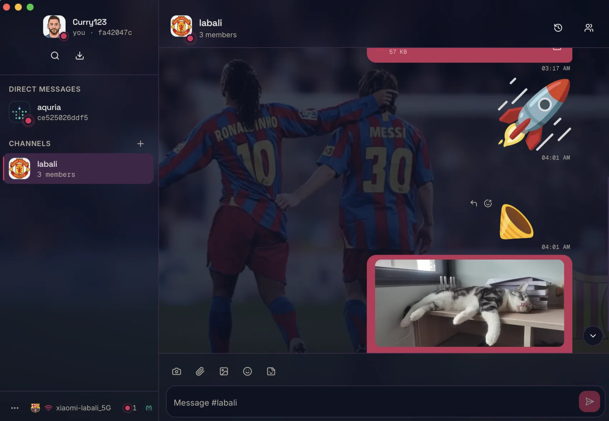
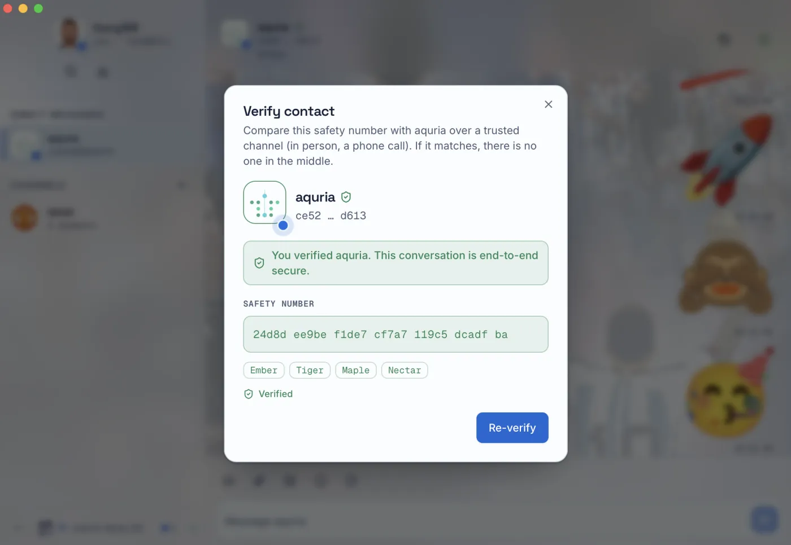
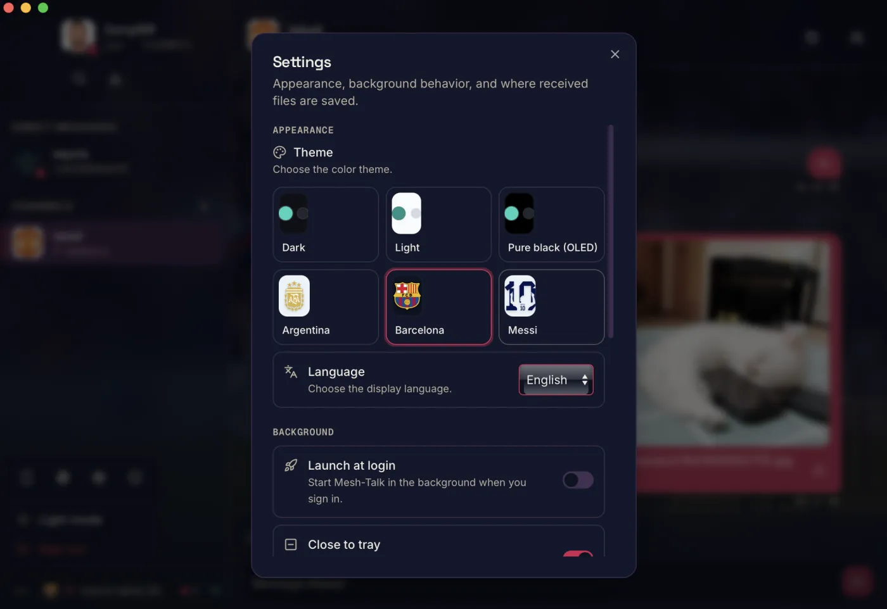

Serverless · End-to-end encrypted
No server.
No
cloud.
No account.
Mesh-Talk peers find each other on the local network and talk directly — your messages and files never leave the network, and stay encrypted the whole way.
3 peers discovered on this network · 0 servers contacted
Devices connect peer-to-peer over the LAN. Nothing is relayed through a company's servers.
Open the app and you're on. No email, no phone number, no profile held by anyone else.
Traffic stays inside your network. Works on an isolated LAN with no internet at all.
How a conversation starts
Discover, verify, then talk — directly.
No directory to register with. Every step happens between the two devices and the network they share.
Discover on the LAN
Each device announces itself with a multicast beacon and builds a live roster of the peers around it.
Verify it's really them
Compare a short safety number out loud or by sight. Once verified, an identity change is flagged loudly.
Talk end-to-end encrypted
Messages, files, and reactions are sealed with a Double Ratchet — forward-secret, the whole way across.
Verifiable trust
You can check it's the right person.
Every contact carries a safety number derived from their keys. Read it together once; if their device ever changes, Mesh-Talk won't let it pass quietly.
amber harbor violet compass quartz meadow signal lantern cedar orbit
A real messenger, not a demo
Everything you'd expect — kept on your network.
One-to-one chats and group channels with members and roles.
Per-message keys for DMs and groups — a stolen key can't read the past.
Send images and videos inline, large files in chunks, all encrypted.
Animated stickers, emoji reactions, replies, and @mentions.
Delete, recall within a window, clear history, or auto-prune by age.
Link your own devices to one account with a code-authorized pairing.
No internet required — pair phones to a laptop hotspot and chat.
One native desktop app, built on Tauri and a Rust core.
In the app
Considered down to the last pixel.



Free & open source
Get Mesh-Talk.
Builds are unsigned by a commercial CA — the release notes walk you through the one-time first-run step on each OS. Prefer to build it yourself? Build from source.